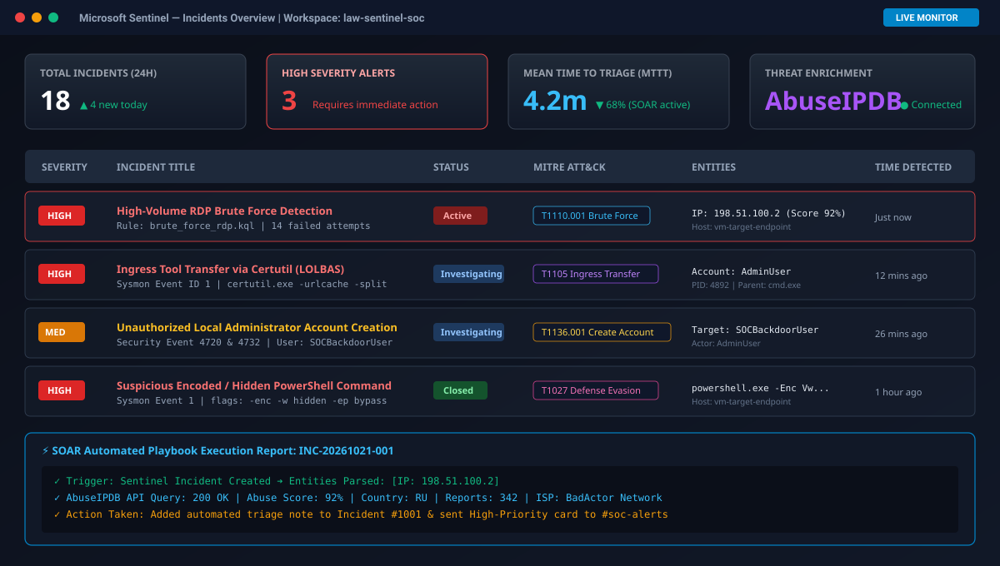
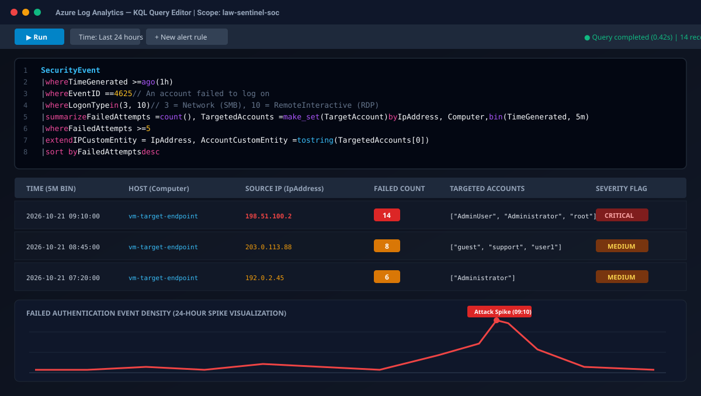
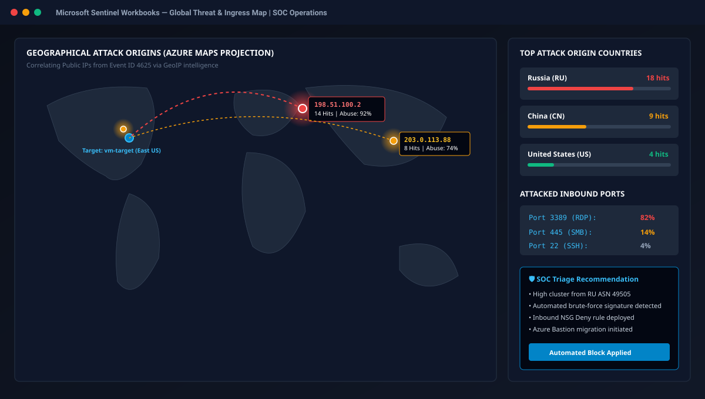
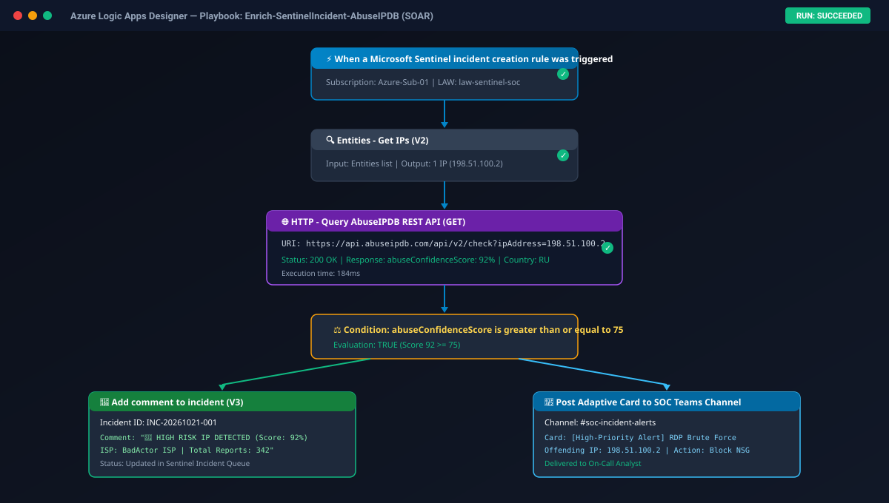

An enterprise security operations lab built inside Microsoft Azure. Telemetry ingestion via Azure Monitor Agent & Sysmon, real-world adversary simulation (LOLBAS, Credential Access), custom KQL analytics rules mapped to MITRE ATT&CK, and automated SOAR threat enrichment.
Click any incident row below to simulate live analyst triage and review incident telemetry.
| Severity | Incident Title | MITRE ATT&CK | Offending Entity | SOAR Action | Details |
|---|---|---|---|---|---|
| HIGH | High-Volume RDP Brute Force Detection 14 consecutive failed logons (Event 4625) | T1110.001 Brute Force | 198.51.100.2 (Score 92%) | Auto-Enriched & Alerted | |
| HIGH | Ingress Tool Transfer via Certutil (LOLBAS) certutil.exe -urlcache -split (Sysmon Event 1) | T1105 Ingress Transfer | User: AdminUser (PID 4892) | Hash Logged | |
| MED | Unauthorized Local Administrator Account Creation User: SOCBackdoorUser escalated (Events 4720 & 4732) | T1136.001 Local Account | Target: SOCBackdoorUser | Escalated to Tier 2 | |
| HIGH | Suspicious Encoded / Hidden PowerShell Command flags: -enc -w hidden -ep bypass | T1027 Defense Evasion | powershell.exe | Closed (Remediated) |
Full visual evidence of Sentinel incidents, KQL query results, threat maps, and SOAR execution flows.




Inspect the exact detection engineering logic authored for Microsoft Sentinel.
SecurityEvent
| where TimeGenerated >= ago(1h)
| where EventID == 4625 // An account failed to log on
| where LogonType in (3, 10) // 3 = Network (SMB), 10 = RemoteInteractive (RDP)
| where isnotempty(IpAddress) and IpAddress !in ("-", "127.0.0.1", "::1")
| summarize
FailedAttempts = count(),
StartTime = min(TimeGenerated),
EndTime = max(TimeGenerated),
TargetedAccounts = make_set(TargetAccount, 10),
SubStatusList = make_set(SubStatus, 5)
by Computer, IpAddress, bin(TimeGenerated, 5m)
| where FailedAttempts >= 5
| extend
AccountCustomEntity = tostring(TargetedAccounts[0]),
IPCustomEntity = IpAddress,
HostCustomEntity = Computer
| project StartTime, EndTime, HostCustomEntity, IPCustomEntity, AccountCustomEntity, FailedAttempts, TargetedAccounts, SubStatusList
| sort by FailedAttempts descDemonstrating enterprise incident response documentation and root-cause analysis.
On October 21, 2026, Microsoft Sentinel alerted on anomalous brute-force authentication against vm-target-endpoint. Subsequent investigation confirmed successful credential guessing against account AdminUser, followed by secondary stage ingress via certutil.exe and local administrative persistence via rogue account SOCBackdoorUser. Attacker was isolated, rogue account purged, and perimeter NSG rule enforced.